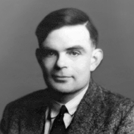

Alan Mathison Turing(1912-1954) war ein britischer Mathematiker und einer der Urväter des Computers. Er ist bekannt für die Turingmaschine(1936), die er in seinem Aufsatz "On Computable Numbers" beschreibt. Turing zeigte, dass diese Maschine jedes algorithmisierbare Problem lösen kann. Der Turing-Test ist ein 1950 von Alan Turing vorgeschlages Kriterium, mit dem über die Intelligenz eines Computer(programm)s entschieden werden soll. Bei diesem Verfahren lässt man eine Testperson über eine Tastatur und einen Bildschirm ohne Sicht- oder Hörkontakt mit zwei ihm unbekannten Gesprächspartnern ein Gespräch führen: Der eine Gesprächspartner ist ein Mensch, der andere eine Maschine. Wenn die Testperson die Gesprächspartner nicht auseinanderhalten kann, hat die Maschine den Turing-Test bestanden.